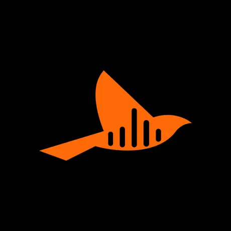

Abstract/Introduction
Welcome to my work-term report, detailing my experience at Oriole AI from September 2023 to December 2023. This report provides a comprehensive summary of my contributions, roles, and achievements during this period. Expect insights about Oriole AI as an employer, accompanied by images of various kinds. Further sections delve into my job description and learning objectives, ensuring a holistic understanding of my time at the company.
Information about the Employer
Founded in 2022 by University of Guelph alumni Daniel Kolodziejczak and Jacob Claessens, Oriole A.I. stands at the forefront of a unique and philosophical approach to artificial intelligence. Headquartered in Guelph, Ontario, this innovative company harnesses the talents of a diverse team of engineers and marketers to pioneer a path distinct from the prevailing AI research trends.
Unlike the majority of AI research groups focused on Advanced General Intelligence (AGI) in 2023, Oriole A.I. diverges with its belief in the development of embodied artificial intelligence. This philosophical stance stems from a fundamental belief in the spiritual dimension of intelligence, a trait they assert cannot be fully replicated or simulated through mechanical processes alone. This perspective challenges the conventional notion that the human brain's functions are purely mechanical and can be reverse-engineered for computer simulation.
At the heart of Oriole's philosophy is the conviction that the ultimate engineering feat is the recreation of man, even in synthetic form. This subtle but profound difference in vision significantly influences the company's product development strategies. Oriole A.I. emphasizes the importance of considering the hardware, alongside the software, of a system. This approach leads to a holistic view of technology development, focusing on the oneness of the system and its alignment with human needs, whether for augmentation or autonomy.
Oriole A.I.'s commitment to this philosophy is evident in its design principles. The company recognizes that for an AI system to accomplish tasks efficiently, it needs a general working knowledge. Oriole A.I. has identified the GPT system as the optimal solution for this requirement, owing to its remarkable alignment and effectiveness, a concept also espoused by AI pioneer Yann LeCun.
In summary, Oriole A.I. is not just a company but a visionary entity. It is a place where the lines between engineering, philosophy, and spirituality blur to create AI solutions that are not just technologically advanced but also aligned with a deeper understanding of human essence and needs. As the company moves forward, it continues to redefine the boundaries of AI, making significant contributions to both the field and to the communities it serves.
During my work-term at Oriole A.I., I was involved in two main divisions. In the first half of the term, I was part of the Research and Development department, where my role primarily focused on backend development. This involved working extensively with Python and two undisclosed cloud computing platforms, contributing significantly to the development of backend or server-side application features. Transitioning to the second half of my term, my focus shifted exclusively to mobile application development. Here, I engaged in developing the 'Oriole A.I.' Android application, where I not only honed my skills in Android app development but also learned and applied Kotlin extensively. Further details about the specific projects and contributions I made during my tenure at Oriole A.I. will be discussed later in this report.